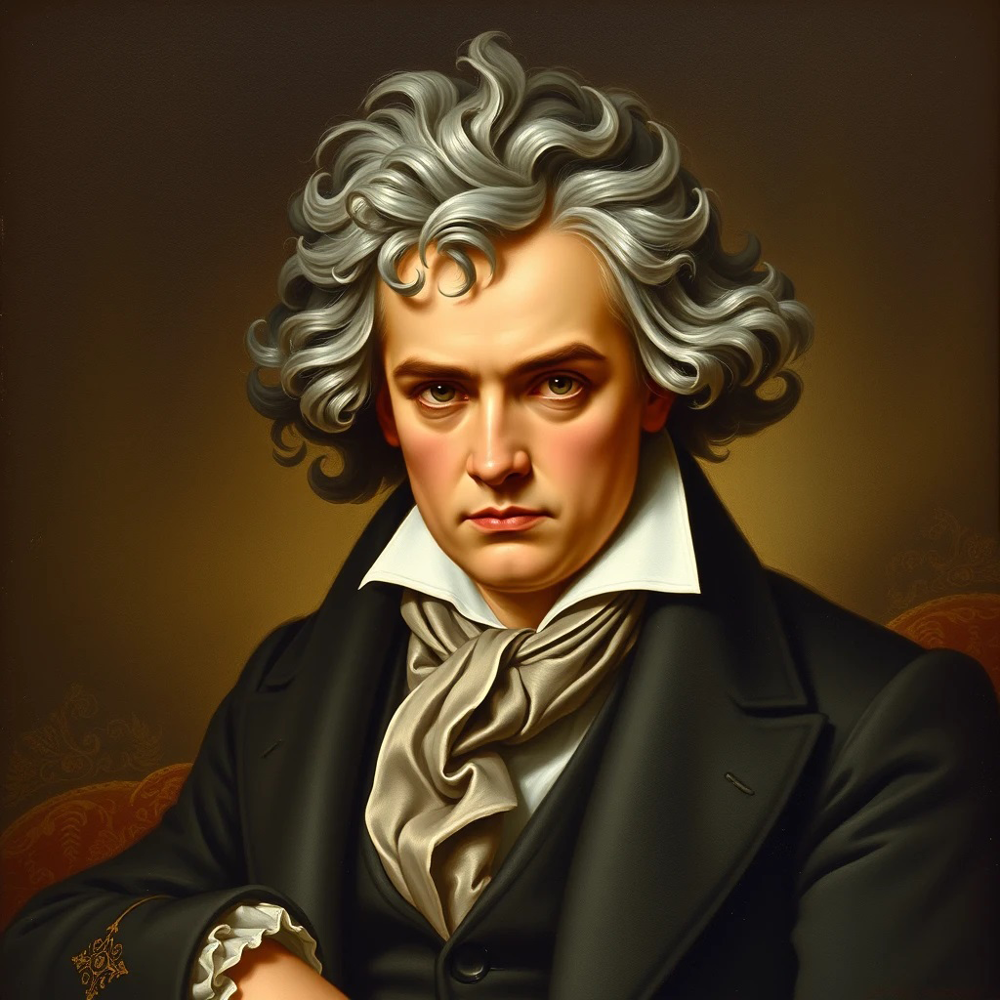

5 Consejos para Mejorar tu Técnica de Piano
Descubre cómo perfeccionar tu técnica pianística con estos consejos prácticos...
Leer más
Desarrolla tu creatividad con las herramientas de hoy

Profundiza en la teoría musical y mejora tus composiciones

Domina la teoría musical y mejora tus habilidades de composición e improvisación.
Más Información
Lleva tu aprendizaje musical al siguiente nivel con nuestro enfoque armónico.
Más InformaciónCapa musical es un acrónimo de las siglas «Comprensión, Aplicación, Práctica de la Armonía musical» inicialmente nace con la idea de solo hablar sobre la armonía moderna y especialmente la teoría del «enfoque armónico», (Armonia aquí) sin embargo, gracias a vuestros comentarios y sugerencias ampliamos nuestro radio de acción musical, porque necesitamos estudiar eficientemente (ideas para practicar en Piano moderno) componer (míra éstas ideas) la improvisacion con frases lick y transcripciones (aquí) todo esto totalmente GRATUITO para que desarrolles una expresión artistica, ayudandote a que el tiempo que dediques al piano sea de calidad.
Mi nombre es Alfredo Gonçalves creador y administrador de este sito que con más de 20 años siendo musico profesional, el cual he sido director musical, arreglista, etc., espero ayudarte y por eso aquí encontrarás, muchos recursos para poner en práctica, todos esos conocimientos armónicos que también querrás usar para componer y en ultimo termino componer al instante, es decir, improvisar. Y si deseas hacerme un pedido o clases personalizadas, escribeme aquí.
Este Blog irá cubriendo los pilares fundamentales para el pianista de hoy en día; como lo es: la improvisación, la composición, la armonía y por supuesto la técnica pianística con recursos para ayudarte a mejorar de manera eficaz.

El Piano Latino es una fusión vibrante de ritmos tradicionales latinoamericanos con las técnicas clásicas del piano. Esta combinación única crea un sonido rico y apasionado que captura la esencia de la cultura latina. En CapaMusical, te ofrecemos recursos especializados para dominar este emocionante estilo musical.
Aprende a incorporar ritmos como salsa, bachata, merengue y bossa nova en tu repertorio pianístico. Descubre cómo los grandes maestros del Piano Latino han dejado su huella en la música contemporánea y cómo puedes desarrollar tu propio estilo único.

Descubre cómo perfeccionar tu técnica pianística con estos consejos prácticos...
Leer más
Explora cómo la armonía puede transformar tus composiciones musicales...
Leer másDescubre las últimas innovaciones en el aprendizaje musical digital...
Leer más
Explora cómo el piano está encontrando un nuevo lugar en la música electrónica moderna...
Leer más
Aprende técnicas de concentración y control del estrés para mejorar tus actuaciones...
Leer más
Descubre las herramientas básicas para empezar a producir música en tu ordenador...
Leer másDiviértete con nuestro puzle interactivo. Ordena las piezas para descubrir una imagen oculta.